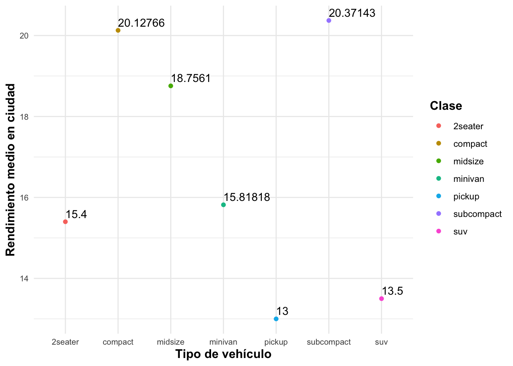
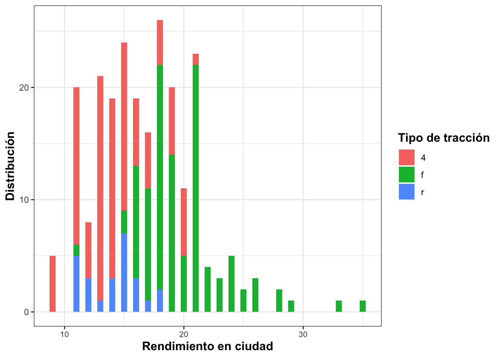
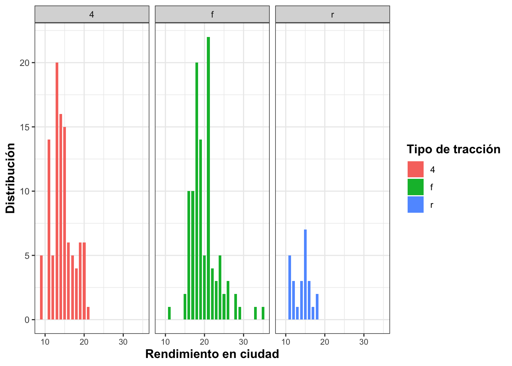

tibble [234 × 11] (S3: tbl_df/tbl/data.frame)
$ manufacturer: chr [1:234] "audi" "audi" "audi" "audi" ...
$ model : chr [1:234] "a4" "a4" "a4" "a4" ...
$ displ : num [1:234] 1.8 1.8 2 2 2.8 2.8 3.1 1.8 1.8 2 ...
$ year : int [1:234] 1999 1999 2008 2008 1999 1999 2008 1999 1999 2008 ...
$ cyl : int [1:234] 4 4 4 4 6 6 6 4 4 4 ...
$ trans : chr [1:234] "auto(l5)" "manual(m5)" "manual(m6)" "auto(av)" ...
$ drv : chr [1:234] "f" "f" "f" "f" ...
$ cty : int [1:234] 18 21 20 21 16 18 18 18 16 20 ...
$ hwy : int [1:234] 29 29 31 30 26 26 27 26 25 28 ...
$ fl : chr [1:234] "p" "p" "p" "p" ...
$ class : chr [1:234] "compact" "compact" "compact" "compact" ...Práctica 2
Dejamos aquí el link al repositorio: Repositorio GitHub
Antes de empezar con los ejercicios propuestos, vamos a cargar la base de datos para el estudio:
Gráfico 1
En esta sección creamos un gráfico que permita visualizar el número de vehículos de cada fabricante del conjunto de datos. Observemos que la variable manufacturer es de tipo character, por lo tanto, dibujaremos un gráfico de barras.
Como vemos, el fabricante que más vehículos ha producido es Chevrolet, seguido muy de cerca por Toyota. En cambio, el fabricante con menos vehículos fabricados es Lincoln, seguido de Land Rover y Mercury.
Gráfico 2
Vamos a ilustrar ahora el rendimiento medio en ciudad para cada clase.

OTRA FORMA DE VER LAS MEDIAS!!!!!!!
medias %>%
ggplot(aes(x=class,y = media)) +
geom_bar(stat= "identity") +
geom_text(aes(label = media), vjust = 2, colour = "white") +
theme_bw() Como vemos, los vehículos que tienen un rendimiento medio en ciudad más elevado son los de la clase subcompact. Por el contrario, la clase pickup es la que tiene un rendimiento medio más bajo.
Gráfico 3
Nos piden ahora construir un gráfico para mostrar el rendimiento medio en ciudad para cada clase y tipo de tracción simultáneamente.
En el gráfico podemos observar que el tipo 2seater sólo tiene vehículos con tracción r y que su rendimiento medio es el más bajo en comparación a los demás de la misma tracción.
Los tipos de vehículos pickup y minivan sólo tienen vehículos con tracción 4 y f, respectivamente. Notemos que los de tipo pickup tienen una media de rendimiento bastante alta en relación a las demás pero por debajo de los vehículos de tipo suv que son los de mayor rendimiento medio con tracción 4.
Por el contrario, los de tipo minivan tienen el rendimiento medio más bajo en relación a las demás medias.
Además, los suv tienen el rendimiento medio en ciudd más alto para los dos tipos de tracción. Los de tipo midsize y compact tienen tracción f y 4. En cuanto al rendimiento medio, midsize contiene la media más alta en comparación a los demás de tracción f.
Por último, los vehículos de tipo subcompact contienen los tres tipos de tracción pero ninguno destaca en el rendimiento medio en ciudad (todos por encima de la media más baja y por debajo de la media más alta).
Gráfico 4
Vamos a mostrar la relación entre el tamaño del motor y el rendimiento en carretera, para cada clase de vehículo.
!!!!!! TENEMOS QUE EXPLICAR QUÉ OBSERVAMOS !!!!!!
Gráfico 5
Finalmente, vamos a comparar la distribución del rendimiento en ciudad para distintos tipos de tracción.

g <- ggplot(mpg, aes(cty))
g +
geom_bar(aes(fill=drv), width = 0.7) +
facet_grid(.~drv)+
theme_bw() +
theme(axis.text.x = element_text(size= 8),
axis.title = element_text(size=12, face = "bold"),
legend.title = element_text(size=12, face = "bold")) +
guides(fill = guide_legend(title = "Tipo de tracción")) +
labs(x= "Rendimiento en ciudad", y="Distribución") 